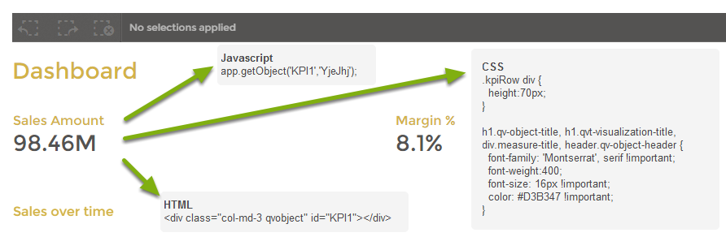

To get started creating a mashup like this one, there are a few resources/assets you should download.
After downloading these assets do the following:
For any mashup there are a few files needed to make it work.
When you download the empty mashup template,
this folder needs to be unpacked to your '
There are a few steps you should consider following when you want to embed the objects of a Qlik Sense App into your mashup. This example will use the dashboard page (home.html) and the empty.js file to achieve the results for this example.
Follow the next steps to embed your first object into the mashup. These steps will help you to add the first KPI into the page.
The above image shows you an example of the KPI we are going to embed first. It is important to know that for implementation we need to think about three different web languages:
<div class="col-md-3 qvobject" id="KPI1"></div> The id
of this div is used by Javascript to insert the object as defined in the Javascript file.app.getObject('KPI1','YjeJhj'); the function app.getObject() takes two
argument, the first is the HTML id in which to inject the object, the second argument is the id of the object as known in Qlik Sense.<div class="col-md-3 qvobject" id="KPI1"></div>// app.getObject('divID','QlikObjectID');app.getObject('divID','QlikObjectID'); onto a new line below.Now that you have embedded your first object, it is time to have a look at the dashboard page. Try to build the dashboard as it is in your example next.